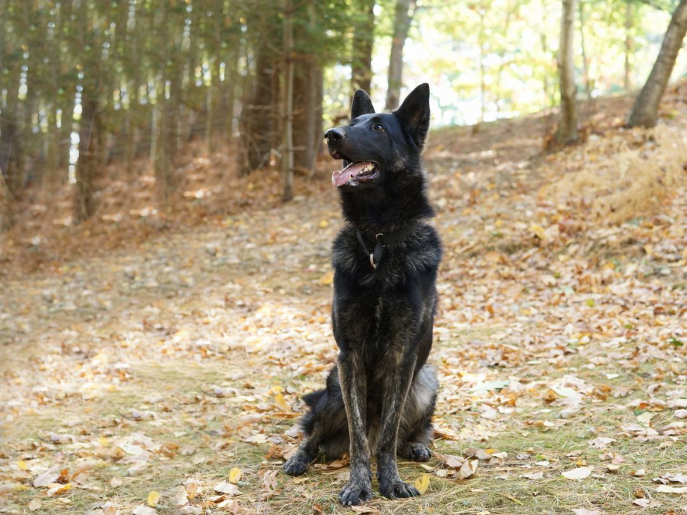
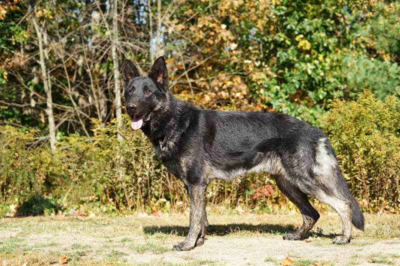

1 / 3

2 / 3

3 / 3

German Shepherd Dog · Wayland, MA
Young · Male · Large · Black, Gray / Blue / Silver
Please read our adoption requirements at http://gsrne.org/requirements-for-adopting-from-gsrne before contacting us about this dog.
Gorgeous Rocco will be celebrating his 2nd Birthday in a few weeks. The first thing you notice is how stunning this boy is. He has those handsome majestic looks that make us fall in love with the breed. In late summer we were asked by a local Police Department if we could help him; he was in their care due to a cruelty and neglect situation. They told us that when they brought him to get an exam he had growled at the Vet Tech who went to look in his mouth, so they were forced to stop with his appointment. The Police Officers that were taking care of him told us that other than the vet visit they had no problems with him. At the time, we decided that instead of placing him in a foster home it would be best to board him with one of our trainers, at his kennel. We wanted Rocco to get some basic obedience and to see exactly what else he would need. The only thing we knew was that Rocco had lived with a small dog and was friendly with people.
Rocco is a smart boy and aced his obedience training and is doing well. He has really bonded with our trainer and goes home with him at night. He stays in the home with his family, which includes two resident GSD’S, a small dog and two children; he stays calmly in his crate overnight. Rocco is not the dog for a novice adopter. Our trainer , who has been working with him, told us he’s a great dog BUT, will need someone with strong leadership, and good dog skills. We are committed to Rocco and will take our time finding the perfect forever home for him. Dogs are very adaptable and we know he will transition easily from our trainer to his forever home. If you think you have the experience and commitment for a dog like Rocco please give us a call.
https://gsrne.org/gsrne-live/our-available-dogs/

Address
P.O. Box 299 Wayland, MA 01778